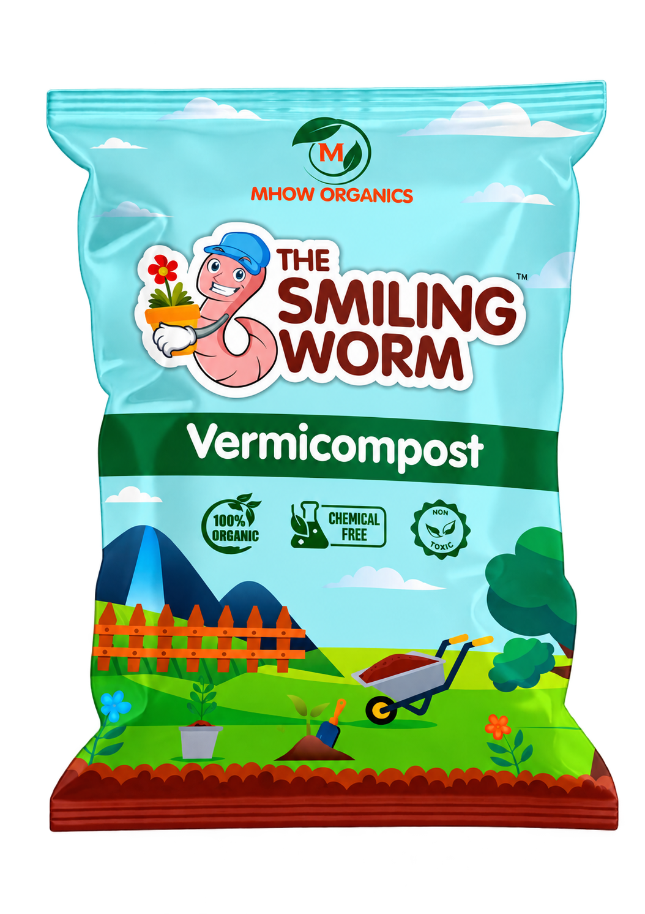
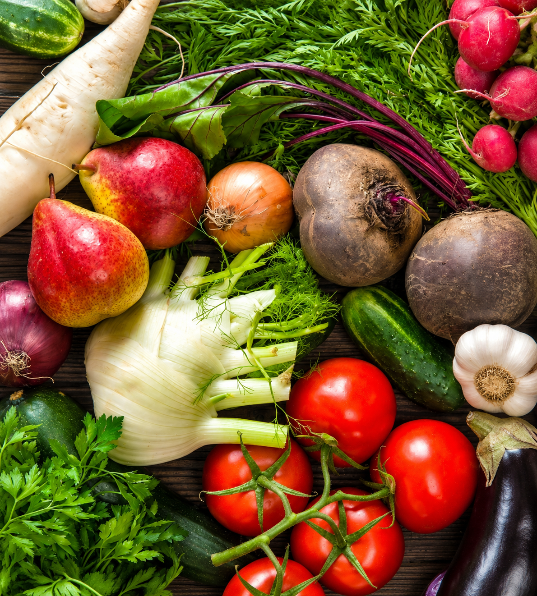
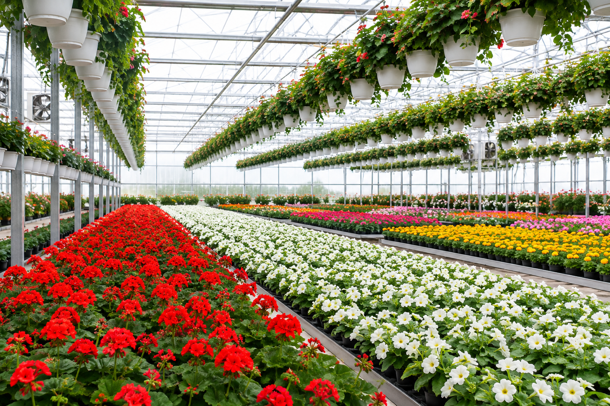
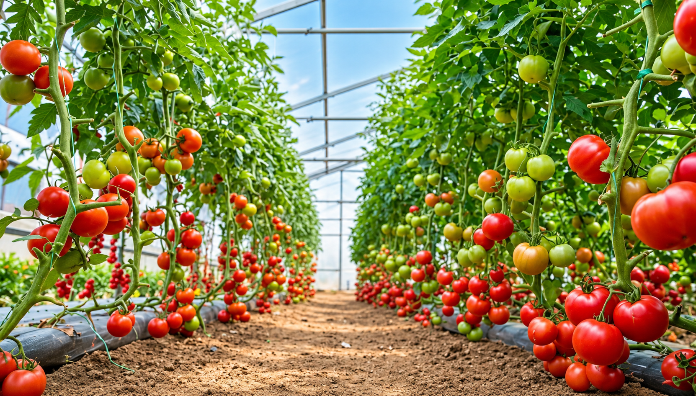
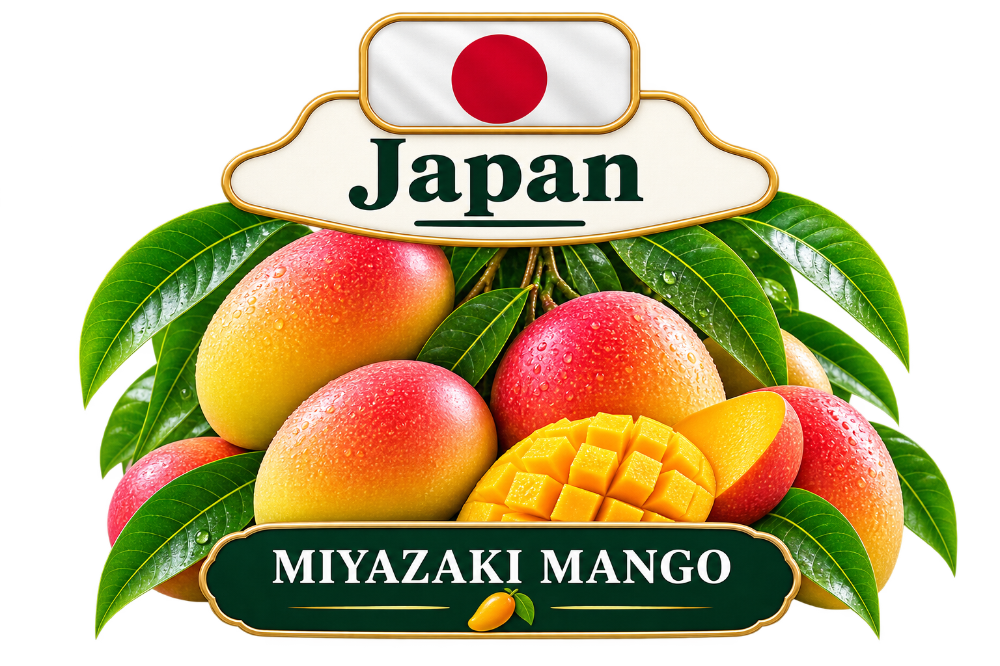

Agriculture is changing. Farmers, gardeners, businesses and consumers are increasingly interested in farming practices that focus not only on productivity but also on long-term soil health, responsible resource management and sustainable agricultural practices.
One agricultural input that has gained significant attention is vermicompost. Produced through the biological decomposition of organic materials with the help of earthworms and microorganisms, vermicompost provides a practical way to convert biodegradable resources into a useful soil amendment.
For India, vermicomposting also represents an opportunity to connect agriculture, organic waste management, rural entrepreneurship and sustainable farming.

What Is Vermicompost?
Vermicompost is a type of organic soil amendment produced when earthworms and microorganisms break down biodegradable organic materials.
Unlike ordinary decomposition, vermicomposting involves a biological system in which suitable earthworm species consume and process partially decomposed organic matter.
Their activity, together with microorganisms, contributes to the transformation of the feedstock into a more stable organic material.
The final product can contain organic matter and nutrients useful for agricultural and horticultural applications. Its exact characteristics depend on raw materials, production methods, maturity and quality-control practices.
How Does Vermicomposting Work?
Successful vermicomposting requires a controlled environment where earthworms can survive and process organic material effectively.
Organic Waste Collection
Suitable biodegradable materials such as agricultural residues, livestock manure and selected plant-based materials can be collected.
Pre-Decomposition
Some feedstocks benefit from partial decomposition before earthworms are introduced.
Earthworm Introduction
Suitable composting earthworms are introduced into prepared organic material.
Moisture & Aeration
Appropriate moisture, temperature and aeration are important for maintaining a healthy vermicomposting environment.
Decomposition
Earthworms and microorganisms gradually transform the organic feedstock.
Harvesting
Mature material is separated, processed and prepared for storage, packaging or agricultural use.

What Materials Can Be Used for Vermicomposting?
Feedstock selection plays an important role in vermicompost production. Materials should be biodegradable and suitable for the intended production system.
| Material | Suitable? | Important Consideration |
|---|---|---|
| Cow dung | Yes | Common organic feedstock when properly prepared. |
| Vegetable waste | Yes | Should be appropriately prepared before processing. |
| Crop residues | Yes | Some materials may require pre-decomposition. |
| Dry leaves | Yes | Can contribute carbon-rich organic material. |
| Selected kitchen waste | With care | Unsuitable materials should be excluded. |
| Plastic | No | Non-biodegradable material. |
| Chemical waste | No | Not appropriate for vermicomposting. |
Benefits of Vermicompost
Vermicompost is valued because it contributes organic matter and nutrients to soil while supporting biological processes. Its benefits depend on product quality, application method, soil conditions and crop requirements.
1. Supports Soil Structure
Organic amendments can contribute to improved soil structure and help create a more favorable environment for roots.
2. Supports Soil Biological Activity
Mature organic materials can provide resources for beneficial soil organisms and contribute to biological activity.
3. Helps With Organic Matter Management
Vermicomposting provides a pathway for converting suitable biodegradable materials into an agricultural resource.
4. Supports Sustainable Agriculture
By recycling suitable organic materials, vermicomposting can form part of a circular approach to agriculture and waste management.
5. Useful in Gardening and Horticulture
Vermicompost can be used in home gardens, nurseries, landscaping, horticulture and agricultural systems when applied according to crop and soil requirements.

Vermicompost vs Chemical Fertilizers
Vermicompost and synthetic fertilizers serve different purposes and should not always be viewed as direct substitutes.
Agricultural nutrient management should be based on crop requirements, soil conditions and appropriate recommendations.
| Factor | Vermicompost | Synthetic Fertilizers |
|---|---|---|
| Origin | Biodegradable organic materials | Manufactured nutrient products |
| Organic Matter | Contributes organic material | Generally does not directly add organic matter |
| Nutrient Release | Generally slower and dependent on decomposition | Often provides readily available nutrients |
| Waste Recycling | Can recycle suitable biodegradable materials | Not primarily a waste-recycling process |
| Role in Farming | Soil amendment and organic input | Concentrated nutrient source |
How to Use Vermicompost
Vermicompost can be incorporated into different growing systems, including agriculture, horticulture, nurseries, landscaping and home gardening.
- Vegetable cultivation
- Fruit crops
- Flowering plants
- Nursery plants
- Indoor and balcony plants
- Kitchen gardens
- Terrace gardens
- Landscaping
- Commercial agriculture
There is no single application rate that is appropriate for every crop. Application should consider the crop, soil condition, plant age, existing nutrient levels and the specifications of the vermicompost product.
Commercial Vermicompost Production
Vermicomposting can also become a commercial agricultural activity when production is managed systematically.
A commercial operation generally needs reliable raw-material sourcing, suitable infrastructure, earthworm management, quality control, harvesting, processing, packaging and distribution.
Key Areas of Commercial Production
- Raw material sourcing
- Production bed preparation
- Earthworm management
- Moisture and temperature management
- Quality control
- Sieving and processing
- Packaging
- Storage
- Wholesale distribution
- Retail distribution
- Domestic and international sales

Vermicompost Business Opportunities in India
India's large agricultural ecosystem and growing interest in sustainable farming create opportunities across multiple segments of the organic fertilizer supply chain.
B2C Opportunities
- Home gardeners
- Terrace gardeners
- Plant enthusiasts
- Kitchen gardeners
- Urban gardening communities
B2B Opportunities
- Farmers
- Nurseries
- Garden centers
- Landscaping companies
- Agricultural retailers
- Distributors
- Organic farming businesses
- Institutional buyers
Vermicompost Export From India
India has a large agricultural base and access to significant quantities of biodegradable agricultural and livestock materials. This creates potential for India to participate in international markets for organic agricultural inputs.
However, exporting vermicompost is more than simply producing and shipping the product. Exporters must understand the regulations of both the exporting and importing countries.
Typical Export Journey
Producer → Quality Control → Packaging → Compliance → Documentation → Logistics → Importer → Distribution
Important Export Considerations
- Product specifications
- Quality testing
- Packaging requirements
- Product labeling
- Applicable HS classification
- Export documentation
- Customs procedures
- Shipping requirements
- Destination-country regulations
- Buyer/importer requirements

International Market Opportunities for Organic Fertilizer
Demand for sustainable agricultural inputs can vary across international markets. Factors such as agricultural practices, climate, greenhouse cultivation, landscaping, organic farming and local regulations can influence market opportunities.
Middle East
Controlled agriculture, greenhouse farming, landscaping and urban gardening can create potential opportunities for soil amendments and organic agricultural inputs.
Africa
Agricultural development, soil management and sustainable farming initiatives can create potential opportunities for organic agricultural products.
Europe
European markets can offer opportunities for sustainable agricultural products, but regulatory, quality and certification requirements can be particularly important.
Southeast Asia
Horticulture, agriculture, plantation crops and organic farming can create opportunities depending on local market conditions.
Quality Parameters Buyers Should Understand
Quality is one of the most important factors when purchasing or exporting vermicompost. Buyers should understand what is being purchased and whether it meets applicable requirements.
Important Quality Considerations
- Moisture content
- Organic carbon
- pH
- Nutrient content
- Maturity
- Carbon-to-nitrogen ratio
- Physical texture
- Potential contaminants
- Heavy metals where applicable
- Pathogen requirements where applicable
Product specifications should always be evaluated according to applicable standards, intended use and destination-market requirements.
How to Choose a Reliable Vermicompost Supplier
Whether you are a farmer, nursery owner, distributor, retailer or international buyer, choosing a reliable supplier is important for maintaining product consistency.
- Check product quality.
- Understand the source of raw materials.
- Ask about production and processing practices.
- Review available quality-testing information.
- Check packaging and labeling.
- Understand product specifications.
- Evaluate supply capacity.
- Check traceability where applicable.
- Discuss delivery requirements.
- For exports, verify documentation capabilities.
Mhow Organics: Supporting a More Sustainable Agricultural Future
Mhow Organics represents a vision of making organic and sustainable agricultural solutions more accessible to farmers, growers, gardeners and businesses.
Our philosophy is rooted in the idea that agricultural resources should be used responsibly and that healthy soil plays an important role in sustainable agriculture.
As the demand for sustainable agricultural inputs continues to evolve, Mhow Organics aims to connect traditional agricultural knowledge with modern production, quality management and market opportunities.

The Future of Vermicomposting
The future of vermicomposting is closely connected with broader developments in sustainable agriculture, circular resource management and responsible waste utilization.
As farmers and consumers become increasingly conscious of soil health and resource efficiency, organic amendments can become an important part of integrated agricultural systems.
Vermicomposting also offers an opportunity to connect waste management with agriculture by transforming suitable biodegradable materials into useful agricultural inputs.
For India, this creates opportunities not only for farmers but also for entrepreneurs, manufacturers, distributors, retailers and exporters.
Frequently Asked Questions About Vermicompost
1. What is vermicompost?
Vermicompost is an organic material produced through the decomposition of biodegradable organic matter with the help of earthworms and microorganisms.
2. What is vermicomposting?
Vermicomposting is the process of using suitable earthworms and microorganisms to break down and stabilize biodegradable organic materials.
3. What are the benefits of vermicompost?
Quality vermicompost can contribute organic matter and nutrients to soil and support soil structure and biological activity when appropriately produced and applied.
4. Is vermicompost good for plants?
Quality vermicompost can be useful for plants as part of an appropriate soil and nutrient-management program.
5. Can vermicompost be used in organic farming?
Vermicompost can be used as an organic input in farming systems, subject to applicable standards and requirements.
6. How is vermicompost made?
Suitable biodegradable material is prepared and partially decomposed before suitable earthworms are introduced. The material is maintained under suitable moisture, temperature and aeration conditions.
7. Which earthworms are used?
Various earthworm species are used in vermicomposting. Commercial producers should select species appropriate to their climate and production system.
8. Can vermicompost be used for home gardening?
Yes. Vermicompost is commonly used in home gardens, terrace gardens, nurseries and other horticultural applications.
9. Can vermicompost be produced commercially?
Yes. Commercial vermicomposting requires suitable infrastructure, feedstock management, production controls, quality management and distribution.
10. Can vermicompost be exported from India?
Export may be possible subject to applicable Indian export procedures and the requirements of the destination country.
11. What should I check before buying vermicompost?
Buyers should consider product quality, raw materials, maturity, testing, packaging, specifications, consistency and supplier reliability.
12. Can I buy vermicompost in bulk?
Bulk purchasing is commonly used by farms, nurseries, distributors, landscaping businesses and other commercial buyers. Contact the supplier for current availability and specifications.
13. Is vermicompost a replacement for all fertilizers?
Not necessarily. Vermicompost and concentrated fertilizers have different characteristics. Crop nutrient requirements and soil conditions should guide fertilizer decisions.
14. What makes a good vermicompost supplier?
A reliable supplier should provide consistent product quality, clear specifications, appropriate packaging and dependable supply and documentation.
15. Where can I buy vermicompost from Mhow Organics?
Contact Mhow Organics directly through the official website to discuss current products, availability, bulk requirements and commercial enquiries.
Looking for Quality Vermicompost?
Whether you are a farmer, gardener, nursery owner, distributor, business or potential international buyer, Mhow Organics can help you explore organic agricultural solutions based on your requirements.
Contact Mhow Organics